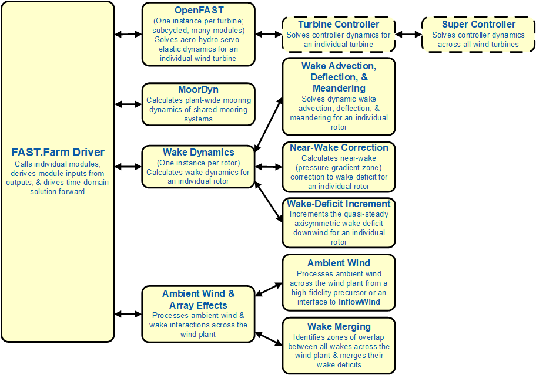
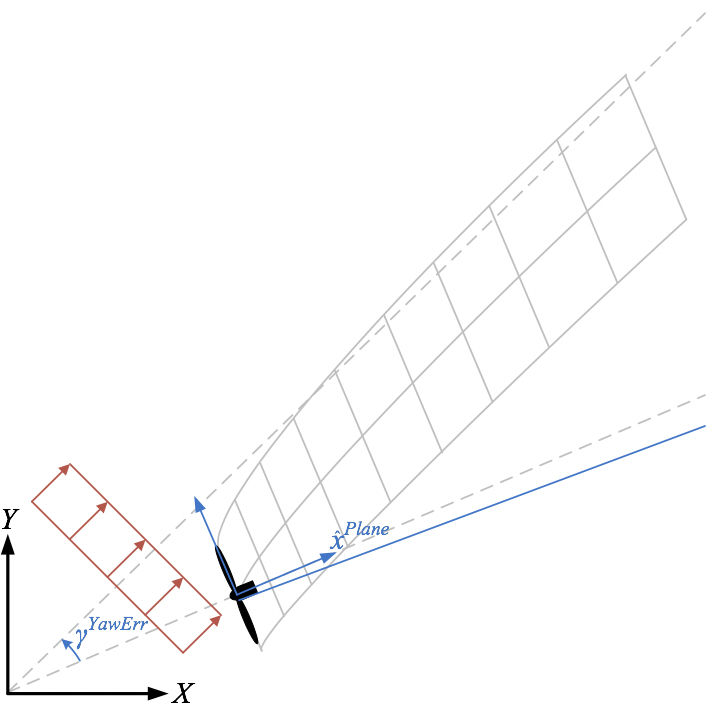
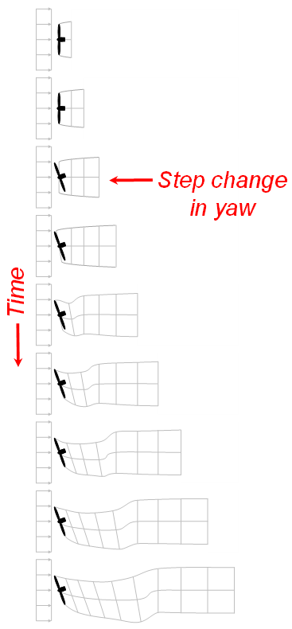
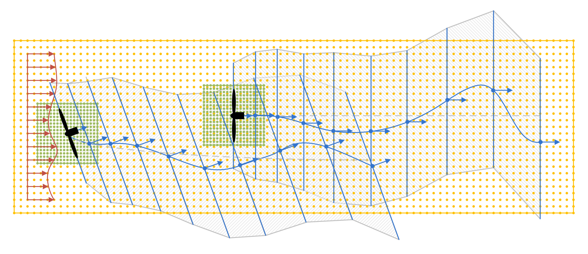
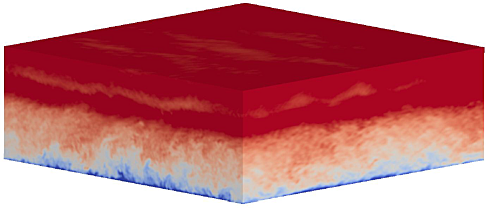
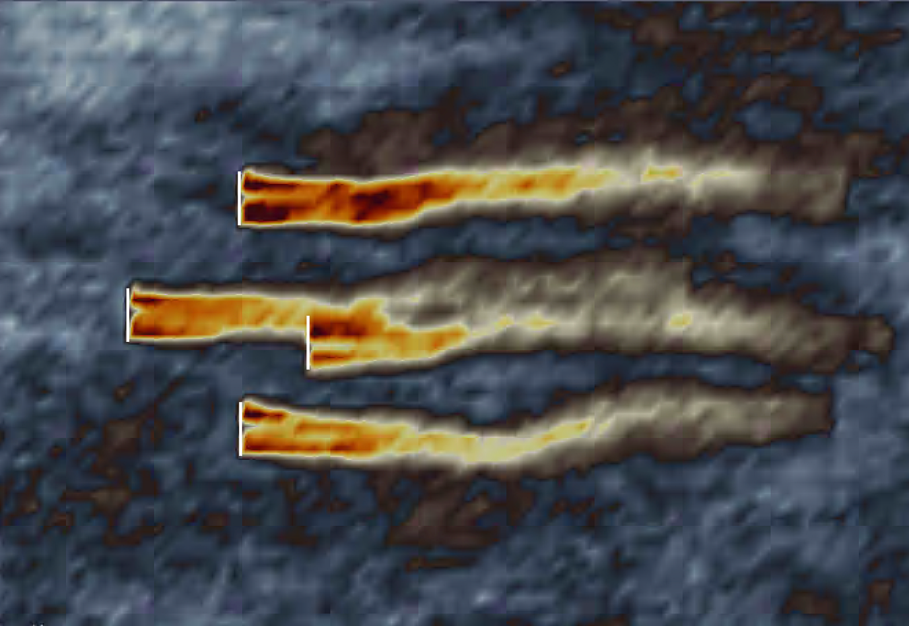

4.19.2. 소개
FAST.Farm은 풍력 발전소 내 풍력터빈의 전력 성능과 구조적 부하를 예측하기 위한 중간 충실도 다중물리 엔지니어링 도구입니다. FAST.Farm은 다음을 사용합니다. OpenFAST 는 각 개별 터빈의 공기-수력-서보-탄성 역학을 해결하지만 대기 경계층에서 풍력 발전 단지 전체의 주변 바람에 대한 추가 물리학을 고려합니다. 그리고 적자, 이류, 편향, 구불구불하고 병합을 깨울 수 있습니다. FAST.Farm은 후류 사행의 수동 추적 모델링을 포함하여 DWM(동적 후류 사행) 모델의 일부 원리를 기반으로 하지만 이전 DWM 구현의 많은 제한 사항을 해결합니다. FAST.Farm은 고도로 반복적이고 확률론적인 설계 프로세스를 지원하기 위해 낮은 계산 비용을 유지합니다. FAST.Farm의 응용 분야에는 풍력 발전 단지 성능 저하 및 부하 불확실성 감소, 풍력 발전 단지 제어 개발을 통한 운영 향상, 풍력 발전 단지 부지 선정 및 토폴로지 최적화, 풍력 발전 단지 환경을 위한 풍력터빈 설계 혁신 등이 포함됩니다. FAST.Farm의 기존 구현은 또한 미래의 계산 및 실험을 통해 풍력 발전소 물리학 지식이 증가함에 따라 풍력 발전소 역학 모델링의 추가 개발을 위한 견고한 기반을 형성합니다.
DWM 모델의 기본 아이디어는 후류 부족 진화(성능에 중요), 후류 사행 및 후류 추가 난류(부하에 중요)를 포함하여 풍력 발전 성능 및 풍력터빈 부하의 정확한 예측과 관련된 주요 후류 특징을 포착하는 것입니다. 후류 부족 진화와 후류 구불구불한 현상은 다음과 같습니다. 그림 4.55.

그림 4.55 축대칭 후류 결핍(왼쪽)과 구불구불한(오른쪽) 진화.
물리의 기본 법칙이 적용되지만 계산 비용을 최소화하기 위해 적절한 단순화가 이루어졌으며 풍력 발전 응용 프로그램용 시뮬레이터(예: HFM) 솔루션을 사용하는 고충실도 모델링(HFM) 솔루션이 적용되었습니다.SOWFA)는 하위 모델을 알리고 보정하는 데 사용되었습니다. DWM 모델에서 후류 흐름 과정은 작은 난류 와류(직경 2개 미만)가 후류 부족 진화에 영향을 미치고 큰 난류 맴돌이(직경 2개 이상)가 후류 사행에 영향을 미치는 "스케일 분할"을 통해 처리됩니다.
FAST.Farm은 각각 풍력 발전 단지의 서로 다른 물리 영역을 나타내는 여러 하위 모델로 구성된 비선형 시간 영역 다중 물리학 엔지니어링 도구입니다. FAST.Farm은 FAST 모듈화 프레임워크의 프로그래밍 요구 사항을 따르는 오픈 소스 소프트웨어로 구현되며, 이에 따라 하위 모델은 드라이버 코드를 통해 상호 연결된 모듈로 구현됩니다. FAST.Farm의 하위 모델 계층 구조는 다음과 같습니다. 그림 4.56 여기서 점선은 FAST.Farm과 별도로 컴파일된 루틴을 나타냅니다.


그림 4.56 FAST.Farm 하위 모델 계층 구조.
항적 이류, 편향 및 사행; 깨어날 때 교정; 및 후류 부족 증가는 후류 역학의 하위 모델입니다(WD) 모델은 단일 모듈로 구현됩니다. 주변 바람과 후류 병합은 주변 바람과 배열 효과의 하위 모델입니다(AWAE) 모델은 단일 모듈로 구현됩니다. OpenFAST와 결합(OF) 모듈, FAST.Farm에는 3개의 모듈과 1개의 드라이버가 있습니다. 여러 가지 사례가 있습니다. OF 및 WD 모듈 – 각 풍력터빈/로터당 인스턴스 1개.
4.19.2.1. FAST.Farm 드라이버
"접착 코드"라고도 알려진 FAST.Farm 드라이버는 개별 모듈을 함께 결합하고 전체 시간 영역 솔루션을 발전시키는 코드입니다. 또한 FAST.Farm 드라이버는 시뮬레이션 매개변수의 입력 파일을 읽고, 이러한 매개변수의 유효성을 확인하고, 모듈을 초기화하고, 결과를 파일에 쓰고, 시뮬레이션이 끝나면 메모리를 해제합니다.
4.19.2.2. OpenFAST 모듈 FAST.Farm의
해당 OF 모듈은 다음과 같은 결합을 가능하게 하는 래퍼입니다. OpenFAST 에서 FAST.Farm으로. OpenFAST는 풍력 발전 단지에 있는 개별 터빈의 동역학(부하 및 동작)을 모델링하여 환경적 자극(해상 시스템의 경우 바람 유입, 파도, 해류 및 얼음)과 전체 시스템(로터, 드라이브트레인, 나셀, 타워, 컨트롤러 및 해양 시스템의 경우 하부 구조 및 스테이션 유지 시스템)의 결합 시스템 응답을 포착합니다. OpenFAST 자체는 결합된 에어로-하이드로-서보-탄성 솔루션의 서로 다른 물리적 도메인에 각각 해당하는 다양한 모듈의 상호 연결입니다. 의 사례가 하나 있습니다. 각 풍력터빈용 OF 모듈은 병렬 모드에서 개방형 다중 처리(OpenMP)를 통해 병렬화됩니다. 초기화 시 전역의 풍력터빈 수, 관련 OpenFAST 기본 입력 파일 및 터빈 원점 X-Y-Z 관성 프레임 좌표계는 FAST.Farm 사용자가 지정합니다. 터빈 기원은 편향되지 않은 타워 중심선과 지면의 교차점 또는 해양 시스템의 경우 평균 해수면으로 정의됩니다. 전역 관성계 좌표계는 다음과 같이 정의됩니다. Z 는 수직 위쪽(반중력)을 향하고, X 는 수평 방향으로 명목상 풍하 방향(0도 풍향을 따라) 및 Y 는 가로 방향, 가로 방향으로 향합니다. 이 좌표계는 특정 나침반 방향과 연결되어 있지 않습니다. FAST.Farm의 다른 시간 종속 입력 중에서 OpenFAST는 터빈 주변의 고해상도 풍력 도메인(시간 및 공간 모두)에서 교란된 바람(주변 및 후류)을 입력으로 사용합니다. 이 고해상도 도메인은 OpenFAST에서 계산된 개별 터빈 부하 및 응답이 후류 및 배열 효과를 포함하여 풍력 발전 단지를 통과하는 흐름에 의해 정확하게 구동되도록 보장합니다.
4.19.2.3. 웨이크 다이내믹스 모듈
해당 WD 모듈은 후류 이류, 편향 및 사행을 포함하여 개별 로터에 대한 후류 역학을 계산합니다. 깨어나기 직전 교정; 그리고 각성 부족 증가. Near-Wake 보정은 Wake 적자의 Near-Wake(압력 구배 영역) 보정을 처리합니다. 후류 부족 증가는 준정상 상태 축대칭 후류 부족을 명목상 바람 방향으로 이동시킵니다. 의 사례가 하나 있습니다. 각 로터용 WD 모듈. 후류 역학 계산에는 터빈 작동이나 대기 조건 등에 따라 달라질 수 있는 많은 사용자 지정 매개변수가 포함되며, 실험 데이터와 더 잘 일치하도록 교정하거나 HFM 솔루션을 벤치마크로 사용하여 교정할 수 있습니다. 기본값은 다음을 기반으로 교정된 각 매개변수에 대해 파생되었습니다. SOWFA 시뮬레이션이지만 사용자가 덮어쓸 수 있습니다.
후류 부족 진화는 고정된 수의 후류 평면으로 구성된 축대칭 유한 차분 그리드에서 이산 시간에 해결되며 각각은 고정된 방사형 노드 그리드를 갖습니다. 방사형 유한차분 그리드는 후류 부족이 축대칭으로 가정되기 때문에 평면으로 간주될 수 있습니다. 후류 평면은 후류 부족이 계산되는 후류의 단면으로 생각될 수 있습니다.


그림 4.57 예시용 수평 후류 편향 보정을 포함하여 유입 스큐로 인한 후류 편향. 아래쪽 점선은 로터 중심선을 나타내고 위쪽 점선은 풍향을 나타내며 파란색 실선은 수평 후류 편향 보정(로터 중심선에서 오프셋)을 나타냅니다.


그림 4.58 요각의 단계적 변화로 인한 단일 터빈의 후류 이류.
가로(수평 및 수직) 후류 구불구불한 후류를 위한 수동 추적 솔루션에 대한 간단한 확장을 통해 FAST.Farm의 후류 역학 솔루션은 후류 편향을 설명하도록 확장됩니다. 그림 4.57 예시용및 항적 대류(Wake Advection)는 다음과 같습니다. 그림 4.58다음과 같은 기타 물리적 개선 사항 중:
주변 바람 대신 방해받는 바람을 공간적으로 평균화하여 후류면 속도 계산(AWAE 모듈에서)
풍향 대신 로터 중심선으로 후류면 방향 조정
시간 평균 조건을 고려하는 대신 유입, 터빈 제어 및/또는 터빈 운동의 과도 현상을 설명하기 위해 후류 역학 모듈에 대한 입력으로 로터의 국지적 조건을 필터링하는 저역 통과 시간입니다.
이러한 확장을 통해 패시브 추적기 솔루션은 다음을 가능하게 합니다.
후류 중심선은 유입 스큐를 기준으로 편향됩니다. 왜냐하면 경사진 유입에서 디스크에 수직인 후류 부족으로 인해 주변 흐름과 평행하지 않은 속도 구성 요소가 발생하기 때문입니다.
후류 적자는 가까운 후류에서 더 강하고 바람이 부는 방향을 약화시키기 때문에 가까운 후류에서 먼 후류까지 가속되는 항적입니다.
시간 평균 대신 저역 통과 시간 필터링 조건이 사용되기 때문에 로터의 조건에 따라 후류 부족 진화가 변경됩니다.
국지적인 축풍을 고려하여 후류가 축방향뿐만 아니라 횡방향으로도 구불구불하게 됨
풍하측을 볼 때 후류 모양이 기울어진 흐름에서 원형 대신 타원형이 됩니다(후류 모양은 로터 중심선을 내려다볼 때 원형으로 유지됩니다).
위의 항목 1에서 후류 편향에 대한 수평 비대칭 보정이 설명됩니다. 즉, 후류 평면 속도로 인한 후류 편향에 대한 수정이 설명됩니다. 이는 후류 회전과 전단의 조합으로 인해 물리적으로 발생하지만 후류 편향은 직접 모델링되지 않습니다. WD 모듈(참조 그림의 경우 그림 4.57 예시용 ). 이 수평 후류 편향 보정은 후류 모델에서 구현된 보정과 유사한 간단한 선형 보정(기울기와 오프셋 포함)입니다. FLORIS. 이러한 수정은 나셀 요 기반 후류 방향 전환(후류 조향) 풍력 발전 단지 제어의 정확한 모델링에 중요합니다.
항목 3에서 후류는 회전자의 국지적 조건 변화에 천천히 반응하고 후류 전개는 준정상 상태 방식으로 처리되기 때문에 저역 통과 시간 필터링이 중요합니다.
니어 웨이크 보정 하위 모델 WD 모듈은 후류 부족 진화를 위한 입구 경계 조건으로 로터 디스크의 후류 속도 부족을 계산합니다. 원후류 솔루션의 정확성을 향상시키기 위해, 후류 부족 수정에 대한 솔루션에서 달리 설명되지 않는 로터 뒤의 압력 구배 구역에서 후류의 반경 방향 확장과 풍속 감소를 근접 후류 수정으로 설명합니다. FAST.Farm의
대부분의 DWM 구현과 마찬가지로 FAST.Farm의 WD 모듈은 축대칭 좌표의 준정상 상태 조건에서 레이놀즈 평균 Navier-Stokes 방정식의 얇은 전단층 근사를 통해 후류 부족 진화를 모델링하며, 와점도 공식을 사용하여 난류 폐쇄를 포착합니다. 얇은 전단층 근사법은 압력 항을 낮추고 속도 구배가 축 방향보다 반경 방향에서 훨씬 더 크다고 가정합니다.
4.19.2.4. 주변 바람 및 배열 효과 모듈 FAST.Farm의
해당 AWAE 모듈은 풍력 발전 단지 전체에 걸쳐 주변 바람을 처리하는 주변 바람 하위 모델과 풍력 발전 단지 전체의 모든 후류 간의 중첩 영역을 식별하고 후류 부족을 병합하는 후류 병합 하위 모델을 포함하여 풍력 발전 단지 전체에서 주변 바람과 후류 상호 작용을 처리합니다. 계산은 AWAE 모듈은 후류 평면에서 시작하여 두 후류 평면의 중심을 연결하는 선을 따라 다음 인접한 후류 평면으로 확장되는 (곡선 가능) 원통으로 형성된 볼륨인 후류 볼륨을 사용합니다. 인접한 후류 평면(실린더의 상단과 하단)이 평행하지 않은 경우(예: 나셀 요 각도의 변화를 포함하는 과도 시뮬레이션의 경우) 중심선은 곡선이 됩니다. 그림 4.59 는 몇 가지 개념을 보여줍니다.


그림 4.59 2개의 터빈 풍력 발전 단지에 대한 후류 평면, 후류 부피 및 후류 구역이 겹쳐지며, 바람이 맞닿는 터빈이 요잉됩니다. 노란색 점은 저해상도 풍력 영역을 나타내고 녹색 점은 각 터빈 주변의 고해상도 풍력 영역을 나타냅니다. 파란색 점과 화살표는 각각 후류 평면의 중심과 방향을 나타내며, 후류 평면은 방향에 수직인 파란색 선으로 식별됩니다. 회색 점선은 후류의 평균 궤적을 나타내고 파란색 곡선은 순간적인 [구불구불한] 궤적을 나타냅니다. 역풍 터빈과 관련된 후류 체적은 위쪽 해치 패턴으로 표시되고, 순풍 터빈과 관련된 후류 체적은 아래쪽 해치 패턴으로 표시되며, 후류 중첩 구역은 크로스해칭 패턴으로 표시됩니다. (그림의 명확성을 위해 순간(구불구불한) 후류 궤적은 부드러운 곡선으로 표시되지만 인접한 후류 평면이 평행할 때 후류 평면 사이의 조각별 선형으로 모델링됩니다. 후류 평면과 체적은 후류 직경의 두 배와 동일한 직경으로 표시되지만 국지적 직경은 계산에 따라 다릅니다. 예시된 바와 같이 후류 평면 또는 체적은 주변 바람 데이터의 저해상도 영역 경계를 넘어 확장될 수 있습니다.
의 계산은 AWAE 모듈은 또한 모든 풍력 데이터 포인트, 터빈 및 항적 평면을 통한 루핑이 필요합니다. 이러한 루프는 OpenMP(개방형 다중 처리) 병렬화 구현을 통해 FAST.Farm의 병렬 모드에서 속도가 향상되었습니다.
주변 바람은 충실도가 높은 전구체 시뮬레이션이나 인터페이스에서 나올 수 있습니다. OpenFAST의 InflowWind 모듈. 의 사용 InflowWind 모듈을 사용하면 균일한 바람, 개별 바람 이벤트 또는 합성으로 생성된 난류 바람 데이터와 같은 간단한 주변 바람을 사용할 수 있습니다. 합성으로 생성된 난류는 예를 들어 TurbSim 또는 Mann 모델에서 생성될 수 있으며, 여기서 바람은 Taylor의 동결 난류 가정을 사용하여 풍력 발전 단지를 통해 전파됩니다. 이 방법은 소규모 풍력 발전 단지나 대규모 풍력 발전 단지 내의 풍력터빈의 하위 집합에 가장 적합합니다. FAST.Farm은 대기 경계층 솔버(ABLSolver) 전처리기와 같이 전체 풍력 발전 단지(풍력터빈 없이)에 대한 고충실도 전구체 LES(대형 와류 시뮬레이션)에 의해 생성된 주변 바람을 사용할 수도 있습니다. SOWFA. 이 대기 전구체 시뮬레이션은 그림에서 볼 수 있듯이 합성 난류보다 더 많은 물리학을 포착합니다. 그림 4.60 – 대기 안정성, 풍력 발전 단지 전체의 난류 길이 척도 및 복잡한 지형 효과를 포함합니다.


그림 4.60 ABLSolver에 의해 생성된 예제 흐름입니다.
이 방법은 InflowWind의 주변 바람 모델링 옵션을 사용하는 것보다 계산 비용이 더 많이 들지만 풍력터빈이 있는 SOWFA 시뮬레이션보다 계산 비용이 훨씬 저렴합니다. FAST.Farm에서는 공간과 시간 모두에서 두 가지 다른 해상도로 주변 바람을 사용할 수 있어야 합니다. 바람은 후류면 전체에 걸쳐 공간적으로 평균화되기 때문입니다. AWAE 모듈인 FAST.Farm은 터빈이 잠재적으로 존재할 수 있는 풍력 발전소 전체에 걸쳐 저해상도 풍력 도메인이 필요합니다. OpenFAST의 정확한 부하 계산을 위해 FAST.Farm에는 각 풍력터빈 주변의 고해상도 풍력 도메인(터빈 변위 포함)도 필요합니다. 고해상도 도메인은 저해상도 도메인의 일부와 동일한 공간을 차지하므로 도메인 중첩이 필요합니다.
고충실도 전구체 시뮬레이션으로 생성된 주변 바람을 사용할 때 AWAE 모듈은 각 시간 단계 내에서 고충실도 솔버에 의해 계산된 고해상도 및 저해상도 영역에 걸쳐 3개 구성요소 풍속 데이터를 읽습니다. 이러한 값은 지정된 드라이버 시간 단계에서 사용하기 위해 파일에 저장됩니다. 공간 이산화를 포함한 바람 데이터 파일은 VTK(Visualization Toolkit) 형식이어야 하며 초기화 시 FAST.Farm 사용자가 지정합니다. 시각화 툴킷 는 3차원(3D) 컴퓨터 그래픽, 이미지 처리 및 시각화를 위한 무료로 사용할 수 있는 오픈 소스 소프트웨어 시스템입니다. 사용할 때 InflowWind 유입 옵션, 고해상도 및 저해상도 도메인 전체의 주변 바람은 다음을 호출하여 계산됩니다. InflowWind 모듈. 이 경우 공간 이산화는 FAST.Farm 기본 입력 파일 내에서 직접 지정됩니다. 특정 드라이버 시간 간격 내에서 결합된 저해상도 및 고해상도 도메인의 이러한 바람 데이터는 FAST.Farm의 가장 큰 메모리 요구 사항을 나타냅니다.
이전 DWM 구현에서는 풍력터빈과 후류 역학이 양방향 후류 병합 상호 작용을 고려하지 않고 개별적으로 또는 연속적으로 해결되었습니다. 또한, 후류 중첩 구역에서 교란된 바람을 계산할 수 있는 방법이 없었습니다. 웨이크 병합은 다음의 FAST.Farm 시뮬레이션으로 설명됩니다. 그림 4.61.


그림 4.61 밀접하게 배치된 로터를 위한 후류 병합.
FAST.Farm에서 웨이크 병합 하위 모델은 AWAE 모듈은 공간에서 겹치는 후류량을 찾아 풍력 발전소 전체의 모든 후류 사이에서 후류가 겹치는 영역을 식별합니다. 후류 부족은 RSS(root-sum-squared) 방법을 기반으로 축 방향으로 중첩됩니다. 가로 구성요소(방사형 후류 부족)는 벡터 합으로 겹쳐집니다. RSS 방법은 병합된 후류에서 축 부족의 국부 운동 에너지가 주어진 바람 데이터 지점에서 각 후류에 대한 축 결손의 국부적 에너지의 합과 같다고 가정합니다. RSS 방법은 스칼라 배열에만 적용됩니다. 이 방법은 겹치는 후류가 유사한 축 방향을 가질 가능성이 높기 때문에 축 결함에 대해 잘 작동합니다. 그러므로 중첩에서는 벡터의 크기만이 중요합니다. 주어진 반경방향은 축대칭 좌표계의 방위각에 의존하기 때문에 벡터 합은 횡방향 구성요소(방사형 후류 부족)에 적용됩니다.
풍력 단지 전체에서 주변 바람과 항적 상호 작용을 시각화하기 위해 FAST.Farm에는 VTK 형식의 출력 파일 생성을 통한 시각화 기능이 포함되어 있습니다. OpenFAST 는 표면 또는 막대 모양 형상을 기반으로 풍력터빈을 시각화하기 위한 VTK 형식의 출력 파일을 추가로 생성할 수 있습니다. FAST.Farm 및 OpenFAST에서 생성된 VTK 파일은 다음과 같은 표준 오픈 소스 시각화 패키지를 사용하여 읽을 수 있습니다. ParaView 또는 VisIt.
4.19.2.5. 터빈 컨트롤러 및 슈퍼 컨트롤러
FAST.Farm에는 개별 터빈 컨트롤러 또는 팜 수준 컨트롤러(수퍼 컨트롤러)를 위한 자체 모듈이 포함되어 있지 않지만 별도로 컴파일된 루틴을 사용합니다. FAST.Farm은 터빈 컨트롤러에 대한 개별 터빈의 OpenFAST 모델을 따릅니다. 컨트롤러는 OpenFAST의 ServoDyn 모듈에 지정되어 있습니다. OpenFAST를 사용하면 DLL 형식의 블레이드 스타일 컨트롤러를 사용할 수 있습니다. 다음과 같은 도구 참조 오픈 소스 컨트롤러 (ROSCO)는 사용자가 아직 자신의 컨트롤러를 가지고 있지 않은 경우 DLL 형식으로 터빈 컨트롤러를 설계하고 통합하는 데 사용할 수 있습니다.
팜 수준 슈퍼 컨트롤러는 외부 도구를 사용하여 설계하고 구현할 수 있습니다. 는 하이콘 (하이콘) 도구는 후류 조향 제어, 공간 필터링/합의 및 유효 전력 제어 등과 같은 일반적인 농장 수준 컨트롤러의 신속한 설계를 제공합니다. Hycon에는 후류 조향 컨트롤러의 설계를 시연하고 FAST.Farm을 사용하여 소규모 농장에서 구현하는 예가 포함되어 있습니다. 는 참조 오픈 소스 컨트롤러 (ROSCO)에는 풍력 발전 단지 제어 기능도 있습니다. 이를 통해 사용자는 다양한 터빈 측정 및 오프셋에 대한 낮은 수준의 액세스를 제공하고 사용자가 작성한 Python 기반 컨트롤러를 구현할 수 있습니다. ROSCO에는 FAST.Farm에서 팜 수준 컨트롤러 구현을 보여주는 예제도 포함되어 있습니다.
4.19.2.6. FAST.Farm 병렬화
FAST.Farm은 직렬 또는 병렬 모드로 컴파일하고 실행할 수 있습니다. FAST.Farm에서는 OpenMP를 통해 병렬화가 구현되었습니다. 이를 통해 FAST.Farm은 노드 내(노드 간이 아님) 내 코어/스레드 간에 계산 작업을 나누어 단일 시뮬레이션 속도를 높이는 방식으로 멀티코어 컴퓨터를 활용할 수 있습니다. 풍력 발전 단지의 크기와 풍력터빈의 수는 사용 가능한 RAM(Random Access Memory)에 의해서만 제한됩니다. 병렬 모드에서 OpenFAST 하위 모델의 각 인스턴스는 내부의 주변 바람과 동시에 별도의 스레드에서 병렬로 실행될 수 있습니다. AWAE 모듈을 다른 스레드에서 읽고 있습니다. 따라서 가장 빠른 시뮬레이션에는 풍력 발전소의 풍력터빈 수보다 적어도 하나 이상의 코어가 필요합니다. 또한, AWAE 모듈은 별도의 스레드로 병렬화됩니다. 관련된 작은 시간 규모와 정교한 물리학으로 인해 OF 하위 모델은 계산 속도가 가장 느린 FAST.Farm 모듈입니다. 출력 계산 AWAE 모듈은 OpenFAST와 병렬로 해결할 수 없는 유일한 주요 계산입니다. 따라서 병렬화된 FAST.Farm 솔루션은 기껏해야 독립형 OpenFAST 시뮬레이션보다 약간 더 느리게 실행될 수 있습니다. 즉, 풍력터빈/발전소 설계 및 분석에 필요한 많은 시뮬레이션을 실행할 수 있을 만큼 계산 비용이 저렴합니다.
대규모 풍력 발전 단지의 모델링을 지원하려면 메시지 전달 인터페이스(MPI)를 통한 다중 노드 고성능 컴퓨터(HPC)의 노드 간 메모리 병렬화 및 병렬화와 관련된 단일 시뮬레이션이 필요할 수 있습니다. MPI는 아직 FAST.Farm 내에서 구현되지 않았습니다.
4.19.2.7. 가이드 구성
이 문서의 나머지 부분은 다음과 같이 구성되어 있습니다. 섹션 4.19.3 에서는 FAST.Farm 소프트웨어 아카이브를 얻는 방법과 FAST.Farm을 실행하는 방법을 자세히 설명합니다. 섹션 4.19.4 는 FAST.Farm 입력 파일을 설명합니다. 섹션 4.19.5 는 FAST.Farm에서 생성된 출력 파일에 대해 설명합니다. 섹션 4.19.6 는 FAST.Farm을 사용할 때 모델링 지침을 제공합니다. FAST.Farm 이론은 다음에서 다룹니다. 섹션 4.19.7. 섹션 4.19.8 는 향후 작업의 개요를 설명하고 참고문헌은 배경 및 기타 정보 소스를 제공합니다. FAST.Farm 기본 입력 및 주변 바람 데이터 파일의 예는 다음과 같습니다. 섹션 4.19.10 및 섹션 4.19.11. 사용 가능한 출력 채널 요약은 다음에서 확인할 수 있습니다. 섹션 4.19.12 시각화 툴킷 형식의.